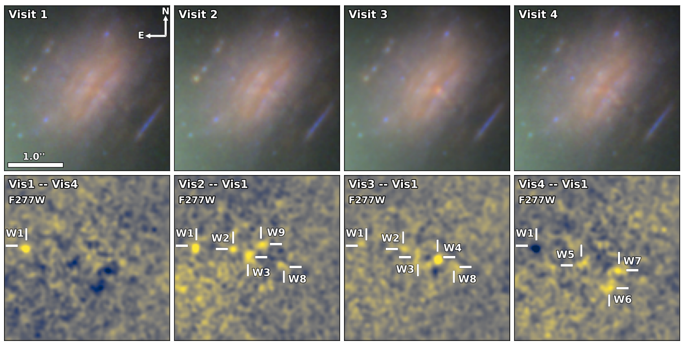
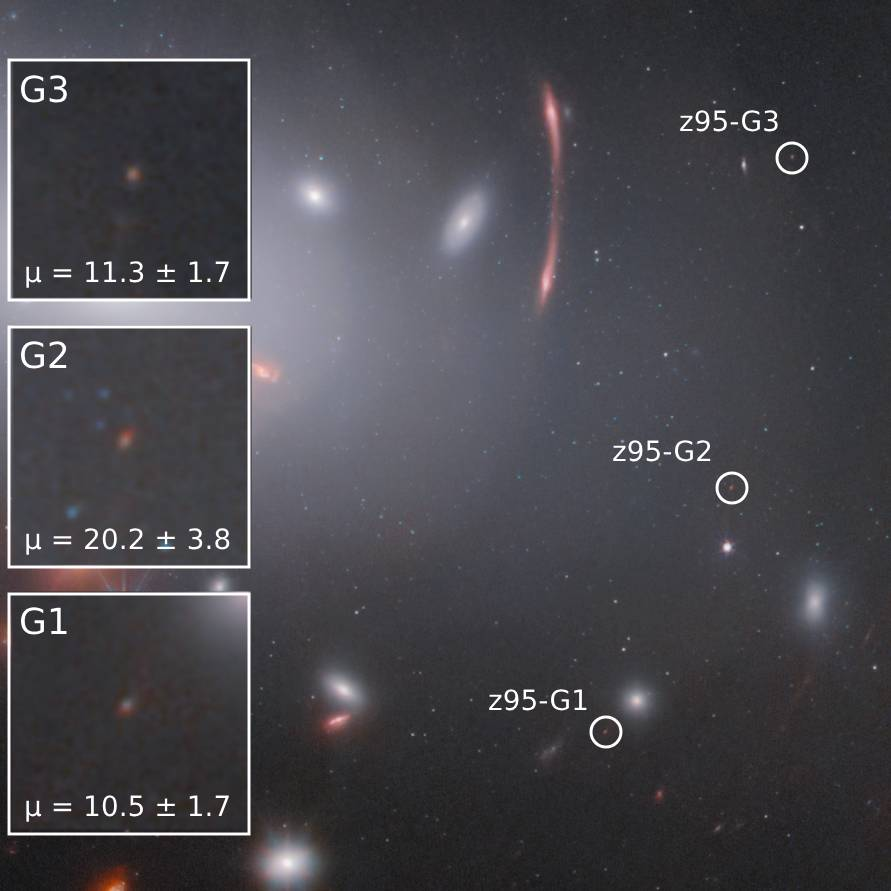

Highly Magnified Massive Stars
Without the aid of gravitational lensing, individual stars can only be resolved in our closest neighbor galaxies (<40 Mpc). Massive stars in strongly-lensed galaxies at cosmological distances can be individually resolved and detected during caustic-crossing transient events, where the magnification of a star in a background galaxy lying close to the cluster's critical curve is temporarily greatly boosted by microlensing. Pre-JWST, a handful of these events had been detected in lensed galaxies at z ≈ 1 (e.g., Kelly+2018, Rodney+2018, Chen+2019). JWST's infrared sensitivity has dramatically improved our ability to detect these events, and dozens of magnified stars have now been detected in caustic crossing galaxies (Yan+2023, Fudamoto+2024, Williams+2026). Highly magnified individual stars have a wide range of science applications, including measuring the distribution of dark matter subhaloes, constraining the high-redshift stellar initial mass function, and potentially discriminating between dark matter models.
My work focuses on characterizing the properties of massive stars and their host galaxies at z ≈ 1. I created a Bayesian inference program to fit lensed stars' SEDs with stellar atmosphere models, constraining the magnitudes, temperatures, surface gravities, and line-of-sight dust extinction. I applied this analysis to nine highly magnified stars that were identified in a single galaxy - the Warhol Arc (z = 0.94). These nine stars were discovered as transient sources in four epochs of JWST imaging of the galaxy cluster MACS J0416. I found that all nine transient sources have temperatures and minimum luminosities consistent with red supergiants. One of the transients was best-fit by a binary stellar model consisting of a red supergiant and a hot, B-type companion star.
z = 0.94." width="1000">
JWST NIRCam images of the Warhol Arc at z = 0.94. The bottom panels show the subtracted images between the different epochs, with the transient events identified. All nine transients are red supergiants that are temporarily visible due to magnification from microlensing.
An extremely compact and highly star-forming galaxy at z = 9.51

In 2022, I was a Co-I on a JWST director's discretionary time program (DD 2767; PI Kelly) which obtained NIRCam imaging and NIRSpec prism spectroscopy of the RX J2129 galaxy cluster field. A triply-imaged galaxy at z = 9.51 (known as RXJ2129-z95) with strong nebular emission lines was found in the JWST data. The high magnification of the brightest image enabled detailed analysis of this intrinsically faint and low-mass galaxy that existed during the epoch of reionization when the Universe was 510 Myr old.
I led the analysis of RXJ2129-z95 and found that the galaxy is extremely compact; the effective radius is just 16.4 pc.
If RXJ2129-z95 is a star-forming galaxy, its strong nebular emission could represent a not yet understood mode of star formation: the Hβ flux would imply a star-formation rate of 1.7 M⊙ yr-1, resulting in an extremely high star formation rate surface density (1000 M⊙ yr-1 kpc-1) that is 30 larger than that typically observed at z = 6 - 8.
The galaxy's stellar mass surface density of 2.5 x 104 M⊙ kpc-2 is on par with that observed in lensed star-forming clumps at high redshifts, suggesting that RXJ2129-z95 may be an isolated star-forming clump or an early progenitor of a globular cluster.
If instead the galaxy's emission is powered by an active galactic nucleus (AGN), RXJ2129-z95 would be the faintest, lowest-mass, and by far the most compact AGN ever discovered above redshift 8.
In either case, RXJ2129-z95 is an intriguing source that can be used to help address a wide range of science questions. My analysis of the galaxy was published in Science and has received over 100 citations. RXJ2129-z95 has been used to constrain an empirical model of reionization and the redshift evolution of the mass-metallicity relation. The galaxy has been followed-up with JWST observations in two programs (GO 2957; PI Uebler, GO 6073; PI Citro).